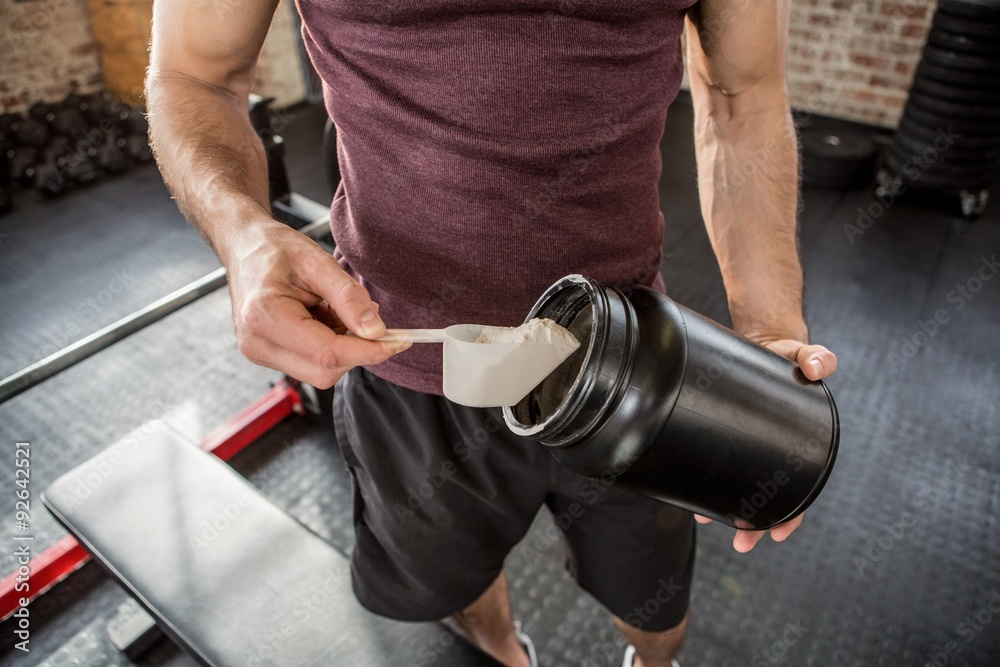
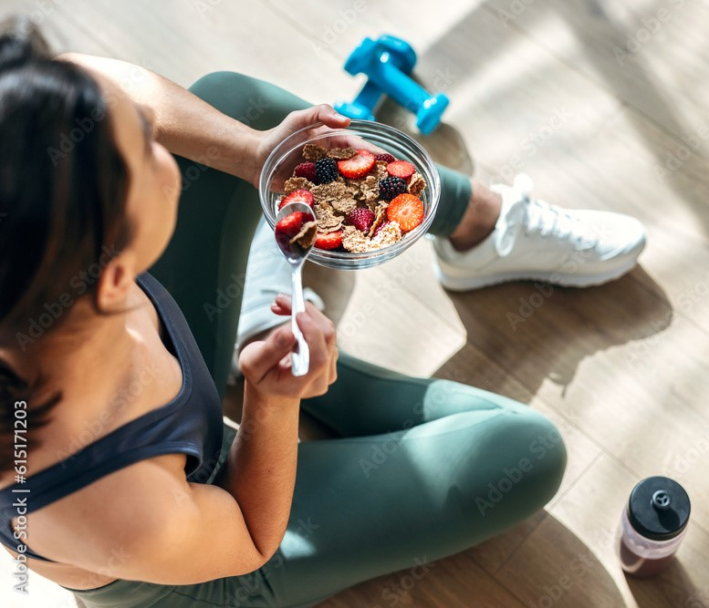
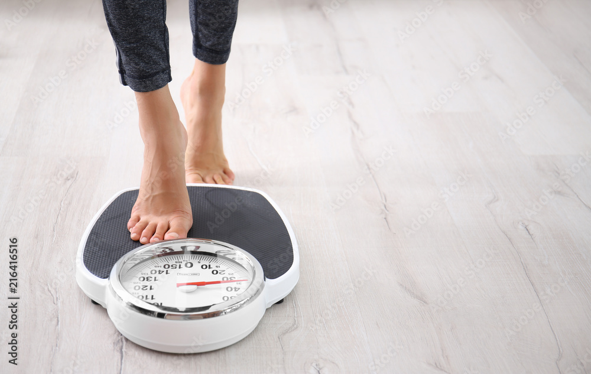

Todos nos procuramos melhorar como pessoa para chegar em um nivel de saúde mental e corporal que ajude a gente até uma vida melhor e que possamos alcançar todos os objetivo, e a saúde do corpo é essencial para isso além de você ganhar um estertica acima da media e se tornar alpha.
"Quem tem objetivo, não tem desculpa. foque e treine com determinação."
Suplementação
Um suplemento alimentar é uma preparação que fornece nutrientes adicionais ao corpo, geralmente em forma de comprimidos, cápsulas, pós ou líquidos. Esses nutrientes podem incluir vitaminas, minerais, aminoácidos, ervas, extratos de plantas ou outros compostos que são consumidos para complementar a dieta e promover a saúde.
Exemplo de Suplemento;o Vitamínico e Mineral esses suplementos contêm vitaminas e minerais específicos, muitas vezes em doses concentradas, e são tomados quando a dieta não fornece quantidades adequadas desses nutrientes essenciais.


Uma alimentação saudável é fundamental para manter a saúde e o bem-estar ao longo da vida. Ela fornece ao corpo os nutrientes necessários para funcionar adequadamente, ajuda a prevenir doenças e promove a vitalidade.
Treino Corporal
A prática regular de exercícios físicos é de extrema importância para a saúde e o bem-estar em várias dimensões da vida.como pro exemplo;
Saúde Óssea: Exercícios de peso-bearing, como corrida e musculação, fortalecem os ossos e podem prevenir a osteoporose.
Saúde Muscular e Articular: O exercício ajuda a manter a força muscular e a flexibilidade das articulações, reduzindo o risco de lesões e melhorando a mobilidade.
Controle de Peso
O controle de peso refere-se à gestão consciente e saudável do seu peso corporal, com o objetivo de alcançar e manter um peso adequado para a sua altura, idade e constituição física. Manter um peso saudável é importante para a sua saúde geral, pois o excesso de peso ou a obesidade podem aumentar o risco de várias condições de saúde, como doenças cardiovasculares, diabetes tipo 2, hipertensão arterial e outras.
O Controle de Calorias, Esteja ciente da ingestão de calorias e das porções de alimentos que você consome. Manter um registro alimentar pode ser útil para rastrear o que você come.

Uma dieta é o conjunto de alimentos e bebidas consumidos regularmente por uma pessoa. Uma dieta saudável é fundamental para fornecer ao corpo os nutrientes necessários para funcionar adequadamente e manter a saúde.
Não perca esse conteudo de valor com mais de 18 paginas so esse e-book, juntando os 3 E-boos são mais de 80 paginas que vão te ajudar nos seu objetivo.